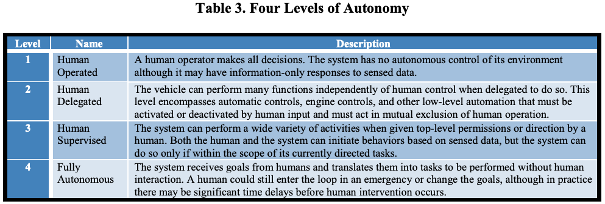
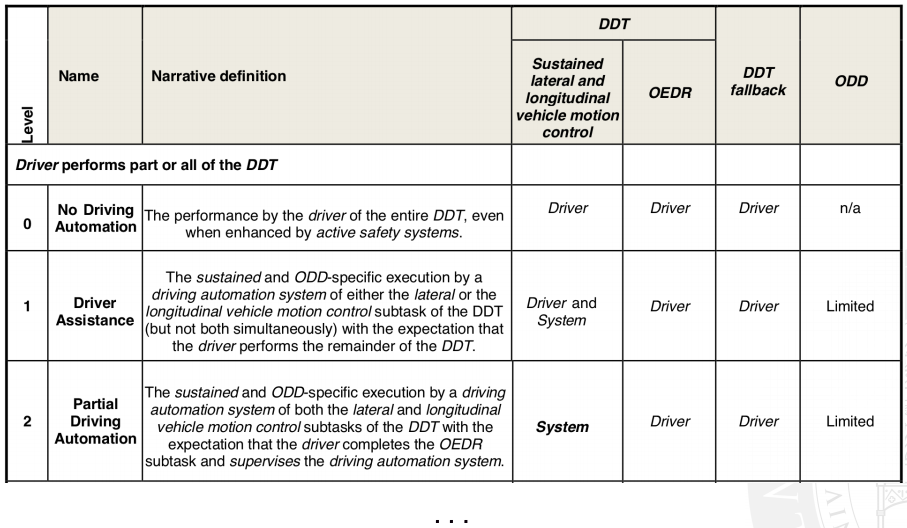
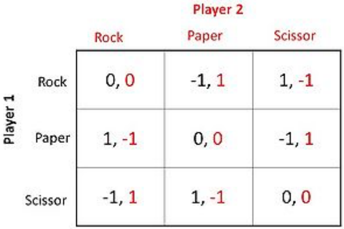
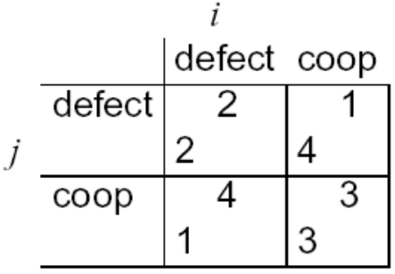
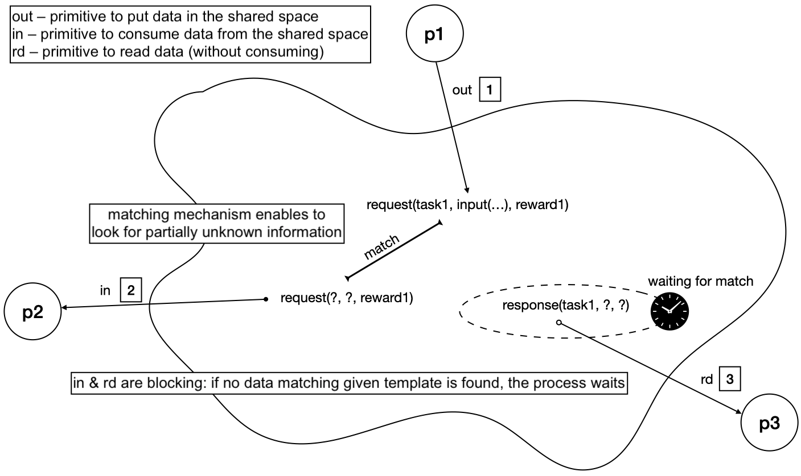
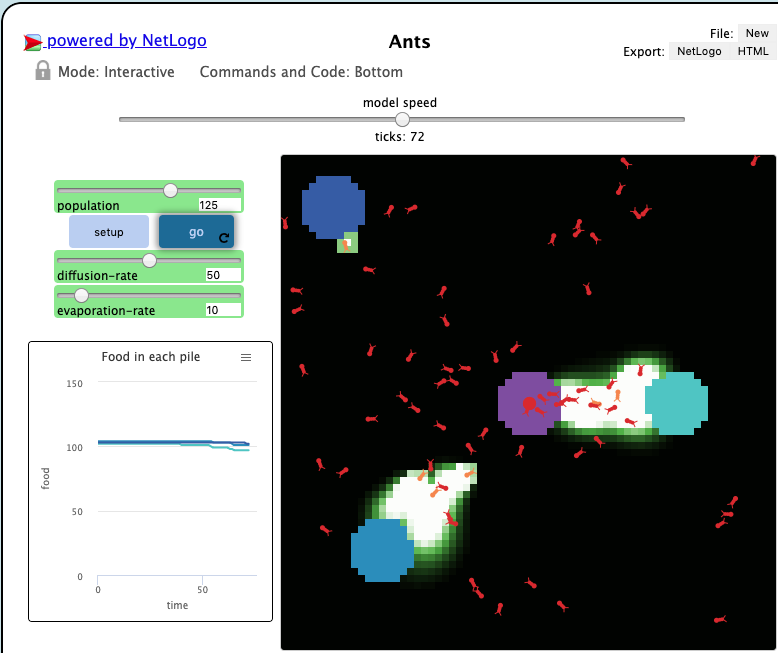
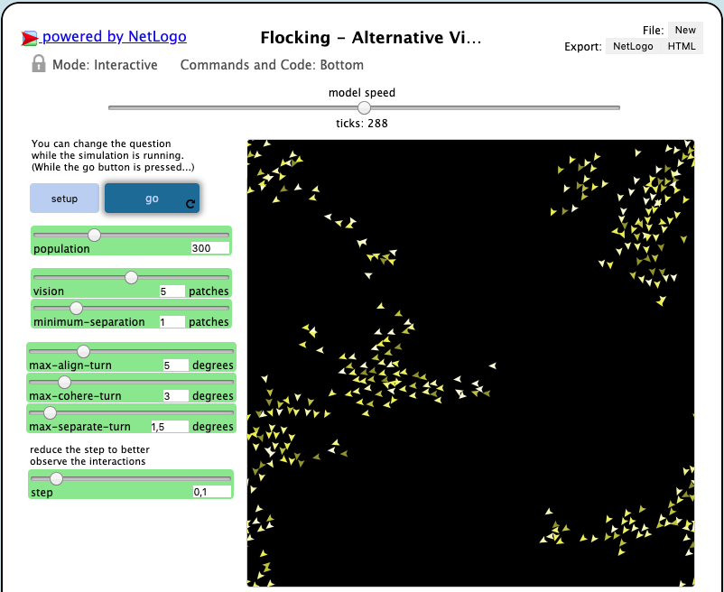
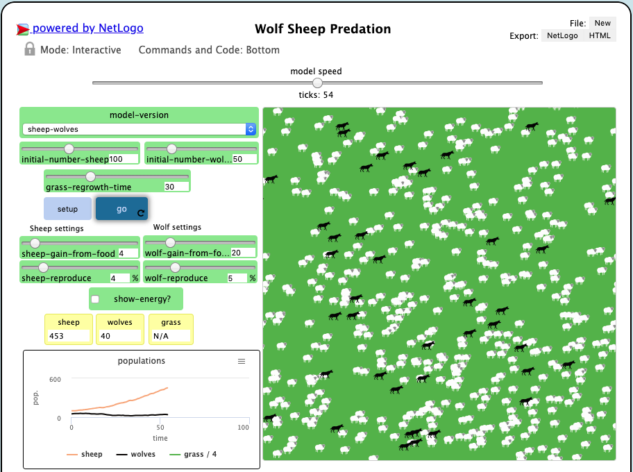

Autonomous Systems:
an overview
University of Modena and Reggio Emilia
Outline
- On the notion of autonomy
- Agents
- Multiagent systems
- Game theory: individual stance
- Game theory: collective stance
- Multiagent interactions
- Conclusion
Why bother?
Social pressure: unproductive mind work and non-qualified time consuming activities might be delegated to artificial systems
Issues
Who does what?
Mostly, this is no longer an issue: artificial systems are generally very welcome to do whatever we like
Who takes the decision?
Autonomy is at least about deliberation as much as about action

Research questions
Is there just one single notion of autonomy?
How do we model autonomy in artificial / computational systems?
How do we engineer autonomy in artificial / computational systems?
On the notion of autonomy
Autonomy in context
From [Unmanned Systems Integrated Roadmap FY 2011-2036]:
Systems are self-directed toward a goal in that they do not require outside control, but rather are governed by laws and strategies that direct their behavior
These control algorithms are created and tested by teams of human operators and software developers. However, if machine learning is utilized, autonomous systems can develop modified strategies for themselves by which they select their behavior
Various levels of autonomy in any system guide how much and how often humans need to interact or intervene with the autonomous system:
Level of automation for cars from [SAE J3016, 2018]:
ADS: automated driving system, DDT: dynamic driving task, ODD: operational design domain, OEDR: object and event detection and response
Agents
Software agents
Autonomy related to decision making:
centralised decision making, as in service-oriented and object-based applications, achieves global goal via design by delegation of control
distributed decision making, as in agent-based applications, achieves global goal via design by delegation of responsibility (agents can say no)
A software agent is a component that is:
Autonomy in software agents
Agents can decide to autonomously activate towards the pursuing of the goal, without the need of any specific event or solicitation:
proactivity is a sort of extreme expression of autonomy
Clearly, it is not always black and white, as modern objects have features that can make objects resemble agents
In effect, several systems for "agent-oriented programming" can be considered simply as advanced tools for object-oriented programming or for more dynamic forms of service-oriented programming
Artificial intelligence perspective
For many researchers, agents do not simply have to be goal-oriented, autonomous, situated, but they have to be "intelligent", that typically means they have to integrate "artificial intelligence" tools: neural networks, logic-based reasoning, conversational capabilities (interact via natural language), ...
Treating a program as if it is intelligent (e.g. "the program wants the input in a different format") is called the intentional stance, and it's helpful to us as programmers to think this way
The intentional stance leads us to program agents at the knowledge level (Newell), that means reasoning about programs in terms of:
- facts and beliefs (rather than variables and data)
- goals and intentions (rather than functionalities and methods)
- desires and preferences (rather than external control)
A possible definition of intelligence is:
"the capability to act purposefully towards the achievement of goals"
Hence for an agent to be regarded (observed) as being intelligent it is enough simply to know how to achieve a given goal, which implies some sort of reasoning
- Goal: keep temperature at 27°
- Percept: temperature
- Actions: increase / decrease temperature
- Reasoning:
if temp < 27: temp.increase() else if temp > 27: temp.decrease()
E.g. a "smart" thermostat:
Too simplistic, too low level of abstraction
- Goal: don't kill pedestrians
- Percept: current situation (where are pedestrians, other cars, weather conditions, ...)
- Actions: gas, brake, steer, ...
- Reasoning: still if-then-else??
Imagine a self-driving car:
Obviously not: theoretical + practical reasoning
Intelligence as "observing reasoning"
- Theoretical reasoning: a process which affects beliefs, to expand / improve knowledge about what's happening (inference)
- Practical reasoning: weighing conflicting considerations for and against competing options, given what the agent desires and it believes (decision making)
- deliberation: decision about what goal to pursue (adopting intentions)
- means-ends reasoning: decision about how to achieve goal (carry out actions)
Our focus will be on the latter
On rationality
Newell's Principle of rationality:
if an agent has the knowledge that an action will lead to the accomplishment of one of its goals (or to the maximization of its utility), then it will select that action (Game Theory / Decision Theory)
- Beliefs (what it knows about the world)
- Desires (what it desires to happen)
- Intentions (what it wants to do to satisfy its desires)
BDI is a very successful and general model to "think" at software agents:
The agent has:
Agent architectures
What types of architectures can we conceive for agents
- Reactive (or tropistic): "if-then-else" behaviour, simple and efficient, not very expressive, no real autonomy (agents act solely upon external stimuli)
- Reactive with State (hysteretic): tracking the state of the world enables the agent to act in context, e.g. different actions with same stimulus
- Goal-oriented: the agent plans its actions towards achievement of a desired state
- Utility-oriented: the agent aims at maximising a function of some parameter measuring what it gains from a given state
JADE example
JADE stands for Java Agent DEvelopment Framework
JADE is a notable example of a distributed, object-based, agent-oriented infrastructure, hence an interesting example about how to face a design / programming paradigm shift
- each JADE agent is executed by a single Java thread
- agents activities must be expressed in terms of behaviours
- JADE agents communicate by exchanging messages
Despite being Java objects, JADE agents have a wide range of features promoting their autonomy:
A behaviour can be seen as an activity to perform with the goal of completing a task
It can represent a proactive activity, started by the agent on its own, as well as a reactive activity, performed in response to some events (timeouts, messages, etc.)
Behaviours are Java objects executed concurrently by a round-robin scheduler
Get the code here: https://github.com/smarianimore/phdcourse-2020-jade
public class FSMAgent extends Agent {
// State names
private static final String STATE_A = "A";
private static final String STATE_B = "B";
private static final String STATE_C = "C";
private static final String STATE_D = "D";
private static final String STATE_E = "E";
private static final String STATE_F = "F";
protected void setup() {
FSMBehaviour fsm = new FSMBehaviour(this) {
public int onEnd() {
System.out.println("FSM behaviour completed.");
myAgent.doDelete();
return super.onEnd();
}
};
// Register state A (first state)
fsm.registerFirstState(new NamePrinter(), STATE_A);
// Register state B
fsm.registerState(new NamePrinter(), STATE_B);
// Register state C
fsm.registerState(new RandomGenerator(3), STATE_C);
// Register state D
fsm.registerState(new NamePrinter(), STATE_D);
// Register state E
fsm.registerState(new RandomGenerator(4), STATE_E);
// Register state F (final state)
fsm.registerLastState(new NamePrinter(), STATE_F);
// Register the transitions
fsm.registerDefaultTransition(STATE_A, STATE_B);
fsm.registerDefaultTransition(STATE_B, STATE_C);
fsm.registerTransition(STATE_C, STATE_C, 0);
fsm.registerTransition(STATE_C, STATE_D, 1);
fsm.registerTransition(STATE_C, STATE_A, 2);
fsm.registerDefaultTransition(STATE_D, STATE_E);
fsm.registerTransition(STATE_E, STATE_F, 3);
fsm.registerDefaultTransition(STATE_E, STATE_B);
addBehaviour(fsm);
}
/**
Inner class NamePrinter.
This behaviour just prints its name
*/
private class NamePrinter extends OneShotBehaviour {
public void action() {
System.out.println("Executing behaviour "+getBehaviourName());
}
}
/**
Inner class RandomGenerator.
This behaviour prints its name and exits with a random value
between 0 and a given integer value
*/
private class RandomGenerator extends NamePrinter {
private int maxExitValue;
private int exitValue;
private RandomGenerator(int max) {
super();
maxExitValue = max;
}
public void action() {
System.out.println("Executing behaviour "+getBehaviourName());
exitValue = (int) (Math.random() * maxExitValue);
System.out.println("Exit value is "+exitValue);
}
public int onEnd() {
return exitValue;
}
}
}
Jason example
Jason is a BDI agent programming language and development framework
- beliefs
- goals (the desires of BDI)
- plans, as lists of actions achieving a given goal (the intentions of BDI)
Jason language is a variant of AgentSpeak, whose main constructs are:
- perceiving the environment
- updating the belief base
- receiving communication from other agents
- selecting ‘socially acceptable’ messages
- selecting an event
- retrieving all relevant plans
- determining the applicable plans
- selecting one applicable plan
- selecting an intention for further execution
- executing one step of an intention
Jason agent reasoning cycle:
Get the code here: https://gitlab.com/pika-lab/courses/as/ay1920/jason-agents
target(20).
+temperature(X) <- !regulate_temperature(X).
+!regulate_temperature(X) : target(Y) & X - Y > 0.5 <-
.print("Temperature is ", X, ": need to cool down");
spray_air(cold).
+!regulate_temperature(X) : target(Y) & Y - X > 0.5 <-
.print("Temperature is ", X, ": need to warm up");
spray_air(hot).
+!regulate_temperature(X) : target(Y) & Z = X - Y & Z >= -0.5 & Z <= 0.5 <-
.print("Temperature is ", X, ": it's ok.").
-!regulate_temperature(X) <-
.print("Failed to spray air. Retrying.");
!regulate_temperature(X).
(kindly provided by Giovanni Ciatto)
Get the code here: https://gitlab.com/pika-lab/courses/as/ay1920/jason-agents
(kindly provided by Giovanni Ciatto)
Autonomy <=> adaptiveness
What is adaptiveness?
The capability of a system and/or of its individuals of changing its behavior according to contingent situations
- re-organizes itself in response to stimuli (flexibility)
- preserves the same overall dynamics (robustness)
Autonomy (of decision making) enables adaptiveness, and adaptiveness is a way of exhibiting autonomy, in turn!
Can be achieved via context-awareness: knowledge of the environment, conditions under which the agent operates
As situated components, agents are inherently context-aware!
Where agents cannot reach, suitable middleware provides desired services...
Multiagent systems
Systems of agents
Multiagent Systems (MAS):
systems or "organizations" of autonomous agents, possibly distributed over multiple computers and/or in an environment, possibly belonging to different stakeholders / organization (federated / open systems), collaborating and/or competing to, respectively, achieve a shared global goal or maximise their own utility, possibly interacting with a computational or physical environment (that could also mediate interactions)
Why?
- A single agent has finite rationality, that is, a limit on the amount of knowledge he can rationally handle in a given time
- Distribution: several problems are intrinsically distributed, in that knowledge can be acquired only locally
- Interactions between personal agents: many problems requires components of different stakeholders / organizations to interact, so the problem is intrinsically composed of multiple agents
- Modelling for real-world organizations: software systems devoted to support the work of some human organization should somehow "mimic" the structure of the real-world organizations
MAS are "paradigmatic" of modern distributed systems:
made up of decentralized autonomous components (sensors, peers, mobile devices, etc.) interacting with each other in complex ways (P2P networks, MANETs, pervasive computing environments) and situated in some environment, computational or physical
Applications
- Trading and e-commerce: auctions, stock market, b2b, ...
- Control of physical Processes: manufacturing pipeline, home/office automation, traffic control, ...
- Shared resources management: cellular networks, power grid, computing, ...
- Workflow Management: scientific research, administrative work, ...
- Simulation of complex processes: biological systems, social sciences, games, ...
- Optimization: any operational research domain, such as logistics, transportation, ...
Software engineering perspective
- the execution of an agent is autonomous, subject to its own internal decision (vs. objects/services being invoked)
- agents interact in many complex ways, such as negotiation, auction, stigmergy, ... (vs. objects/services request/response)
- agents interact because it is beneficial to themselves or the system (vs. objects/service are obligated to)
In a MAS, agents participate by providing the capability of achieving a goal in autonomy (vs. objects/services offering interfaces)
Artificial intelligence perspective
- Different agents may have either conflicting goals, or individual goals contributing to a systemic one, or a shared goal
- In any case, the actions of an agent may influence other agents possibility of achieving their own goal
- Distributed decision making:
- strategy: how to behave taking into account what others could do? (competition, cooperation, ...)
- protocol: what means to use to interact? (negotiation, argumentation, stigmergy, ...)
Strategic thinking
- agents $Ag = {i, j, ..., k}$
- each with its own goal $G_{Ag}$
- each with its own pool of actions $Ac_{Ag} = {a_{1}, a_{2}, ..., a_{n}}$
Assume we have:
How should agents decide which action to carry out (their strategy), assuming they cannot communicate?
Game theory:
individual stance
Game theory
To reply we need game theory:
"analysis of strategies for dealing with competitive situations where the outcome of a participant's choice of action depends critically on the actions of other participants"
Notice that agents influence each other even if they do not communicate, as long as they act within a shared environment!
Rationality
- given $Ac$ and $G$ they will attempt the actions that maximise the possibility to achieve $G$
- to do so they should be able to evaluate the outcome $\omega$ of an action (e.g. success or failure) and the utility $u$ that such action brings towards achievement of $G$
Agents are rational (recall Newell's principle?):
The behaviour of rational agents of favouring actions that maximise $u$ is called preference
Utility functions are used to model preferences: $$u_{i} = \Omega \rightarrow \mathbb{R} \; \text{where} \; \Omega = {\omega_{1}, ..., \omega_{M}}$$
Utility functions enable to define preference orderings over outcomes (hence, actions): $$\omega >=_i \omega' \; \text{means} \; u_i(\omega) >= u_i(\omega')$$ as for different agents $u$ and preferences may vary
Utility and adaptation
Utility is one of the many things that can work as a driver to adaptation: the lower the utility of an action, the greater the chance for the agent to change action / behaviour / goal...
As utility of an action may vary dynamically based on context (environment), adaptation of the agent may act and vary dynamically, too
Multiagent encounters (or, games)
If multiple agents either act (almost) simultaneously or do not have means to observe each other actions, the outcome of their behaviours will still be some combination of each individual outcome
Dominant strategies
- a strategy $s_1$ is said dominant with respect to $s_2$ if $s_1$ is always preferred to $s_2$ for every possible outcome
- a rational agent will never play a dominated strategy!
- if there is only one non-dominated strategy, that's the trivial strategy to adopt...
The criteria according to which the choice of actions happens reflect the agent strategy (e.g. rational vs random)
Zero-sum games
In zero-sum games the utilities add up to $0$: $$u_i(\omega) + u_j(\omega) = 0 \; \forall \omega \in \Omega$$
Zero-sum games are strictly competitive: no agent can gain something if no other loses something (every win-lose game basically)
In these games there is no rational choice without information about other players' strategies!
Rock-paper-scissors
Non zero-sum games
Real-life situations are usually non zero-sum: there is always some "compromise"
Check out this scene from the movie "A beautiful mind"
- under the assumption that agent $i$ plays $s_1$, agent $j$ can do no better than play $s_2$
- AND under the assumption that agent $j$ plays $s_2$, agent $i$ can do no better than play $s_1$
Nash equilibrium: each player's predicted strategy is the best response to the predicted strategies of other players
In other words, two strategies $s_1$ and $s_2$ are in Nash equilibrium if:
Unfortunately there are both games with no Nash equilibrium (zero sum ones) and with more than one Nash equilibrium (hence no trivial strategy to adopt)
In games where there are common dominant strategies, they represent a Nash equilibrium
Prisoner's dilemma
- if one confesses (action: $defect$) and the other does not (action: $coop$), the confessor will be freed, and the other will be jailed for 3 years
- if both confess, then each will be jailed for 2 years
- if none confess, then each will be jailed for 1 year
Two men are collectively charged with a crime and held in separate cells, with no way of meeting or communicating
We can measure utilities in term of, e.g., years of prison saved over the case of 4 years of prison (anything else could be ok)
Prisoners' payoff matrix
- so defect-defect is the Nash Equilibrium (best strategy): both agents defect, and get payoff = 2
- but intuition says they should both cooperate and each get payoff of 3!
The individual rational action is defect: it guarantees a payoff of no worse than 2, whereas cooperating guarantees a payoff of at most 1
Game theory:
collective stance
What is missing?
This apparent paradox is the fundamental problem of multiagent interactions: it appears to imply that cooperation will not occur in societies of self-interested agents...
- the incentive to defect evaporates (e.g. due to reputation, fear of retaliation, ...)
- cooperation is the rational choice in the indefinitely repeated prisoner's dilemma!
A possible answer: play the game repeatedly
Axelrod's tournament
Suppose you play iterated prisoner's dilemma against a set of opponents: what strategy should you choose, so as to maximize your overall (long-term) payoff?
Axelrod (1984) investigated this problem, with a computer tournament for programs playing the prisoner's dilemma: many different agents using different strategies, interacting hundreds of times with other agents
- ALLD: "Always defect" (hawk strategy)
- TIT-FOR-TAT: on round $t_0$ cooperate, then at each $t_{i \gt 0}$ do what opponent did on $t_{i-1}$
- TESTER: on 1st round defect, then if opponent retaliated start playing TIT-FOR-TAT, otherwise intersperse cooperation and defection
- JOSS: as TIT-FOR-TAT, but periodically defect
Strategies:
- don’t be envious: don't play as if it were zero sum
- be nice: start by cooperating, and always reciprocate cooperation immediately
- not too nice: always punish defection immediately, but then don't overdue it
In the long run, TIT-FOR-TAT is best strategy: cooperation wins!
Emerging "rules":
Towards multiagent learning
Axelrod Tournament shows that a group of agents can change behaviour (i.e., strategy), to eventually learn what is the most suitable way of behaving to maximize own success or/while maximize overall success of the group
A whole research topic on its own: Multi-agent Reinforcement Learning
Learning $\approx$ adaptiveness?
- the former implies acquiring new knowledge from past experience, to be used in future situations
- the latter implies changing behaviour upon a change in context of action (can be purely reactive)
- learning may lead to adaptation, e.g. when new knowledge affects the utility function of an agent
- agents may learn how to adapt (e.g. by monitoring outcomes of past adaptation actions)
Long story short: no
However
Multiagent interactions
Forms of interaction
- direct interactions: agents directly communicate with each other by exchanging messages
- indirect (or stigmergic) interactions: agents interact indirectly by accessing an environment in which they operate (physical, computational, or mixed)
Differently from game theory, let's now assume that agents can interact:
As they have a mean to affect each other's actions and beliefs, they can strategically act based on what the other agents do (observation), and agree on common courses of actions
- communication: explicit exchange of beliefs, desires, intentions, ...
- synchronization: ordering of concurrent actions
- coordination: organizing a shared plan of actions
Interactions may imply:
Types of interaction
- Collaborative: agents cooperate towards the achievement of some common application goals, and trust each other because they know they work towards the same goal
- Competitive: agents are forced to interact to achieve individual goals, but they don't have to trust each other
- Collaborative competition: agents compete but for the sake of achieving some global goal, hence they trust each other
MAS vs. distributed algorithms
In distributed algorithms, too, there is need of reaching agreement on how to act or on a common perspective of the world (leader election, mutual exclusion, validation of a blockchain transaction, etc.)
However, there is no concept such as "goal", "utility" of actions, etc.: either the algorithms works, or fails
Interaction protocol
- direct communication: sequence of messages between agents aimed at discussing how to reach agreement
- stigmergic interactions: the form and structure of the "signs" (traces) in the environment, how and when agents should leave signs, and how they should react to these
Defines the rules of the encounter between agents: the set of available interaction actions, their dependencies, how they affect the "state of the world", etc.
In this context, agents' strategy regards freedom in deciding what to do at each step of the protocol amongst admissible actions
- MAN: "Football!"
- WOMAN: "Movie!"
- MAN: "This time Football next time Movie"
- WOMAN: "No, this time movie and next time Football"
- MAN: "No, This time Football next TWO times Movie"
- WOMAN: "OK"
- MAN: "OK"
E.g. "battle of the sexes":
Protocol (interaction space) design
- MAN: Proposal
- WOMAN: Proposal
- if action differs:
- MAN: agree or counter-proposal
- WOMAN: agree or counter-proposal
- while (agree < 2)
- MAN: agree or counter-proposal with increased WOMAN utility
- WOMAN: agree or counter-proposal with increased MAN utility
Designing an interaction protocol implies devising a sequence of interactions with desired properties
Strategy: as soon as the counter-proposal reaches a sufficiently high utility, agree
Direct interaction: negotiation
- Collaborative --> ContractNet, argumentation
- Competitive --> Auctions
- Cellular networks
- Manufacturing
- Supply chain
"Negotiation is an economically-inspired form of distributed decision making where two or more partners jointly search a space of possible solutions to reach a common consensus" (P. Maes)
Applications
ContractNet
- An agent (initiator) needs help from others to carry out a set of tasks (because it cannot or prefer not to do them itself), hence informs other agents about these tasks (type, description, requirements, deadline, etc) and asks them to PROPOSE to perform them
- Other agents (responders) place "bids" specifying how they would be able to carry out such task (in what time, with what efficiency and accuracy, etc)
- The initiator then decides how to assign each task to the "best" responder (according to whatever criteria / strategy)
JADE ContractNet: initiator
public class Initiator extends Agent {
@Override
protected void setup() {
this.addBehaviour(new ContractNetInitiator(this, new ACLMessage(ACLMessage.CFP)) {
@Override
protected Vector prepareCfps(ACLMessage cfp) {
/* prepare ACL message Call for Proposals */
return super.prepareCfps(cfp);
}
@Override
protected void handlePropose(ACLMessage propose, Vector acceptances) {
/* handle proposal coming from responders */
super.handlePropose(propose, acceptances);
}
@Override
protected void handleRefuse(ACLMessage refuse) {
/* handle refusals coming from responders */
super.handleRefuse(refuse);
}
@Override
protected void handleAllResponses(Vector responses, Vector acceptances) {
/* when all replies to CFP have been collected, do something (select winner) */
super.handleAllResponses(responses, acceptances);
}
@Override
protected void handleInform(ACLMessage inform) {
/* handle confirmations of tasks carried out coming from responders */
super.handleInform(inform);
}
});
}
}
Get the code here: https://github.com/smarianimore/phdcourse-2020-jade
JADE ContractNet: responder
public class Responder extends Agent {
@Override
protected void setup() {
MessageTemplate template = MessageTemplate.and(
MessageTemplate.MatchProtocol(FIPANames.InteractionProtocol.FIPA_CONTRACT_NET),
MessageTemplate.MatchPerformative(ACLMessage.CFP) );
this.addBehaviour(new ContractNetResponder(this, template) {
@Override
protected ACLMessage handleCfp(ACLMessage cfp) throws RefuseException, FailureException, NotUnderstoodException {
/* react to reception of call for proposals */
return super.handleCfp(cfp);
}
@Override
protected ACLMessage handleAcceptProposal(ACLMessage cfp, ACLMessage propose, ACLMessage accept) throws FailureException {
/* react to acceptance of own proposal (do the task, then inform result) */
return super.handleAcceptProposal(cfp, propose, accept);
}
});
}
}
Get the code here: https://github.com/smarianimore/phdcourse-2020-jade
Auctions
When agents have competing interests and no interest in cooperating, the only solution for cooperation is to "pay" the actions/tasks/resources that agents provide to others
Auctions are the negotiation mechanisms that determines the values of a good/resource/actions to be "sold" by an offering (seller) agents to buyer agent(s)
Indirect (mediated) interaction
- Tuple spaces: shared repositories of data with access mechanisms embedding synchronisation of interactions
- Pheromone-based coordination: inspired by collective behaviour of social insects such as ants
- Field-based coordination: inspired by gravitational waves influencing how objects behave
All the form of direct interaction seen can be replicated as indirect ones, based on some sort of environment mediation
The tuple space model
TuCSoN: greeting agents
Get the code here: https://gitlab.com/pika-lab/courses/ds/aa1920/lab-02
public class SteAgent extends AbstractTucsonAgent {
public static void main(String[] args) throws TucsonInvalidAgentIdException {
new SteAgent().go();
}
public SteAgent() throws TucsonInvalidAgentIdException {
super("ste_agent");
}
@Override
protected void main() {
try {
SynchACC helloOps = getContext();
final TucsonTupleCentreId defaultTC = new TucsonTupleCentreId("default", "localhost", "20504");
final LogicTuple helloTuple = LogicTuple.parse("msg(gio,hello)");
final LogicTuple steTemplate = LogicTuple.parse("msg(ste,_)");
helloOps.out(defaultTC, helloTuple, Long.MAX_VALUE);
helloOps.in(defaultTC, steTemplate, Long.MAX_VALUE);
} catch (final OperationTimeOutException | TucsonInvalidTupleCentreIdException | InvalidLogicTupleException | TucsonOperationNotPossibleException | UnreachableNodeException e) {
e.printStackTrace();
}
}
}
(kindly provided by Giovanni Ciatto)
Get the code here: https://gitlab.com/pika-lab/courses/ds/aa1920/lab-02
public class GioAgent extends AbstractTucsonAgent {
public static void main(String[] args) throws TucsonInvalidAgentIdException {
new GioAgent().go();
}
public GioAgent() throws TucsonInvalidAgentIdException {
super("gio_agent");
}
@Override
protected void main() {
try {
SynchACC helloOps = getContext();
final TucsonTupleCentreId defaultTC = new TucsonTupleCentreId("default", "localhost", "20504");
final LogicTuple worldTuple = LogicTuple.parse("msg(ste,world)");
final LogicTuple gioTemplate = LogicTuple.parse("msg(gio,_)");
helloOps.in(defaultTC, gioTemplate, Long.MAX_VALUE);
helloOps.out(defaultTC, worldTuple, Long.MAX_VALUE);
} catch (final OperationTimeOutException | TucsonInvalidTupleCentreIdException | InvalidLogicTupleException | TucsonOperationNotPossibleException | UnreachableNodeException e) {
e.printStackTrace();
}
}
}
(kindly provided by Giovanni Ciatto)
Interactions enable adaptiveness
In several cases, ensembles of very simple, purely "reactive" components, may globally exhibit adaptive behaviours, as a system (e.g. single cell vs. organism)
In these cases, adaptiveness is a capability that emerges not from individual behaviour in isolation, but from individuals' interactions (nature, medium, rate, ...)
NetLogo
- can give instructions to hundreds or thousands of independent "agents", all operating in parallel
- makes it possible to explore the connection between the micro-level (individual behaviour) and the macro-level (global patterns)
Programmable modeling environment for simulating complex systems ($\approx$ many individuals, many interactions, emergent behaviour)
Either download or use online: https://ccl.northwestern.edu/netlogo/
NetLogo: pheromones
NetLogo: fields (flocking)
NetLogo: fields (predation)
Conclusion
Main takeways
Autonomous systems already are "among us"
Individual behaviour is half of the story: interactions, hence collective behaviour, is equally relevant (or even more)
Many ways to design individual autonomy: BDI, game theory, learning (not explored here), ...
Many ways to design system autonomy: interaction protocols, mediated interaction, game theory, ...
Engineering of autonomous yet predictable, controllable, and understandable systems is an open challenge, still
Personal interests
- How to best coordinate agents in a multiagent system?
- Can effective and efficient communication for coordination be learnt?
- Applications to Internet of Things, supply chain, manufacturing, swarm robotics, ...
Coordination
Learning
Thanks
for your attention
Questions?
University of Modena and Reggio Emilia